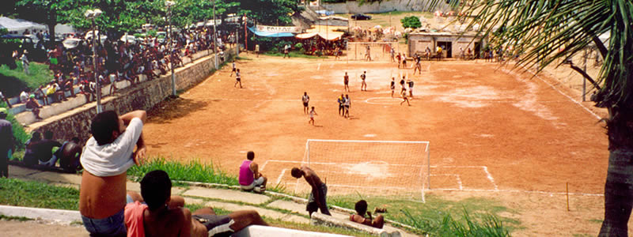

Support Brazilians at the World Cup

In just a few months, Brazil will host the next World Cup. While this is really exciting for football fans around the globe and for Brazil's tourism industry, the costs of hosting the event will leave Brazilian tax payers with a sky high bill to pay. As it stands, the government has already blown the budget, and isn't even close to delivering the infrastructure initially promised to outlive the Cup as a legacy.
In a country where much of the population still lives in poverty, it seems extravagant to be spending tens of billions of reais on entertainment. Preparation for the event has created jobs, but the reality is that the money coming in from ticket sales is going straight into FIFA's pockets and the revenue generated by tourism is going in most part to massive corporations such as McDonald’s and Coca Cola (both of whom sponsor the World Cup) and multinational hotel chains like Mercure and Plaza Hotels (who are amongst those recommended on FIFA's accomodation web pages).
As a reaction to the grandiose spending, many people have suggested a boycott of the World Cup, but going down this road may actually have a negative impact on the already fragile situation Brazilians are finding themselves in. Without the revenue which World Cup tourists will bring, the balance left to pay will be much harder to tackle.
A plan of action
Whether it may be a good thing for the country or not, the reality is that the matches are happening and it's too late to turn back now. But if what this World Cup is worth isn't being invested in education, healthcare and public infrastructure, fans and tourists alike can and should attempt to counterbalance the negative effects so much superfluous spending will bring, by making sure that their visit to Brazil will have a positive twist on Brazilian people's lives.
Here are a few ideas of small things that you can do to make your World Cup more Brazilian:
Before arriving in Brazil:
Book locally owned accommodation
- Book your accommodation with a small Guesthouse (a Pousada in Portuguese) instead of a big hotel chain. Not only will doing this help ensure that the money you're spending in the country is going into small businesses but your experience will be much more authentic.
- If you've spent all your money on air fares and event tickets you could consider Couchsurfing, even though reports are that this avenue is is becoming gridlocked, you might be lucky. Both you and your hosts will be winning, and you will be learning about Brazil from the locals.
- A good alternative to Pousadas is Airbnb where you will find people renting their spare rooms, houses. Your experience will liken that of Couchsurfing, except that it won't be free. It will, however, still be personal - unlike staying at a hotel - and it will be worth it. Alugue Temporada is another resource used by Brazilians to rent holiday houses and pousadas, it is only in Portuguese but the search fields are simple to navigate.
Learn Portuguese
More and more Brazilians are learning English, but most people still don't really speak it, especially if you are visiting smaller cities. So it will come in handy if you know some basic Portuguese, and yes, there is an app for that. Duolingo is a really handy FREE website and mobile app which even lets you learn Portuguese (and other languages) offline.
If you want to take your Portuguese to the next level, Brazilian Gringo also has a detailed list of great language learning resources.
Learn about the History
The World Cup celebrates different cultures coming together in their love of football, and this year they do so in a place which performs that celebration everyday. Brazil is a melting pot of cultures which resulted from various waves of forced and voluntary immigration through the last 500 years, so not only it is important to know about all this history but it is also interesting stuff. Having an idea of the background of this vibrant country will help you understand Brazilians better and get less caught up in the tourist trail.
While you are in Brazil:
Eat with the locals
These big events are sponsored by companies such as McDonald’s and Coca Cola which unfortunately means that in most or even all host cities across Brazil, FIFA has banned street vendors from setting up their stalls within a two mile radius of the stadiums. Some have even been evicted from their usual places, and aren't allowed to earn a living as they always have just so more burgers and coke can be sold.
With this in mind, do your best to avoid eating at the fast food giants in or around the game venues, and seek some delicious brazilian food to tuck into. Choosing family owned restaurants and spending your money at local businesses instead of chains, is the way to see your money fed into the businesses that need it most.
A lot of people on the hospitality industry work on low or sometimes not even the minimum wage so it will definitely help to tip your waiter, cab driver and bartender. Here you can find more detailed information on tipping in Brazil
Volunteer
Chances are that you will try to make a holiday of your time in Brazil, so why not donate some of your time and volunteer as well. There are many organisations who welcome helping hands all over the country, from orphanages to women's refuges, to teaching English and building houses in favelas.
Bear in mind that to volunteer for "a religious entity, to a social services organization or to a non-profit non-governmental organization" in Brazil you will normally need a visa (called VITEM 1) - you should check out the requirements depending on your particular circumstances in advance.
Here are just a few ideas to get you started:
Education
Teaching English is a sought after skill in Brazil and an easy way to volunteer if you come from an English speaking country, Iko Poran is one of the organisations who welcome volunteers but there are many others all over Brazil. Like Ciacac who works with kids and teenagers organising classes and activities.
Domestic Violence and Women's Rights
Domestic violence is still a huge issue in Brazil. Alexandra House, Casa de Cultura da Mulher Negra and Agencia Patricia Galvao are a few organisations who support victims and fight for women's rights.
Community
Viva Rio works with communities to develop policies, promote social inclusion and combat violence. Rio Eu Amo Eu Cuido welcomes volunteers to work alongside the communities in promoting cooperation towards looking after the city through small projects.
Help exchange programmes
These will ask for a few hours work in exchange for food and accomodation:
The following sites are a good source of volunteering projects in a vast range of categories, you will find many other organisations who require volunteers also in others areas of action and of Brazil not mentioned:
Party with the locals
With poverty and wealth rubbing shoulders all over the country, the organisers of the Cup are trying to do their best to hide poor neighbourhoods from the eyes of visitors. An example of this sweeping under the carpet approach is Salvador da Bahia, where a bridge has been built linking the stadium with the tourist area of town in order to bypass a poor area. However it's those poor areas which are embarrassing to the government and organisers that should make them proud. After all, it is the people who make Brazil the vibrant country it is, and the reason why we all want to go there. So you wouldn't want to miss that. Go explore, and use common sense by not taking valuables with you and not walking around at night as some places can be dangerous.
Tourism as usual
For many people the World Cup will be a time to avoid travelling to Brazil, as accommodation prices rise and it is in general busier. But you shouldn't let it put you off visiting Brazil. According to past World Cup surveys, tourism in world cup hosting countries is usually the same as in normal years, so while there may be more tourists coming for the World Cup, others will decide not to. If the numbers of tourists are a deterrent, the atmosphere should make up for it a hundred times. Again, if you are concerned about accommodation prices, remember Couchsurfing?
And even if you aren't going to the World Cup, but still want to help reduce the impact it will have on the issues Brazil already has, you could donate the value of a ticket bid to a Brazilian charity or NGO for example. They will give meaning to your World Cup.
Of course, these are only some ideas, but if you would like to suggest other ways of making the World Cup an event which the Brazilian people can be a part of, please leave us a comment below.
Comments